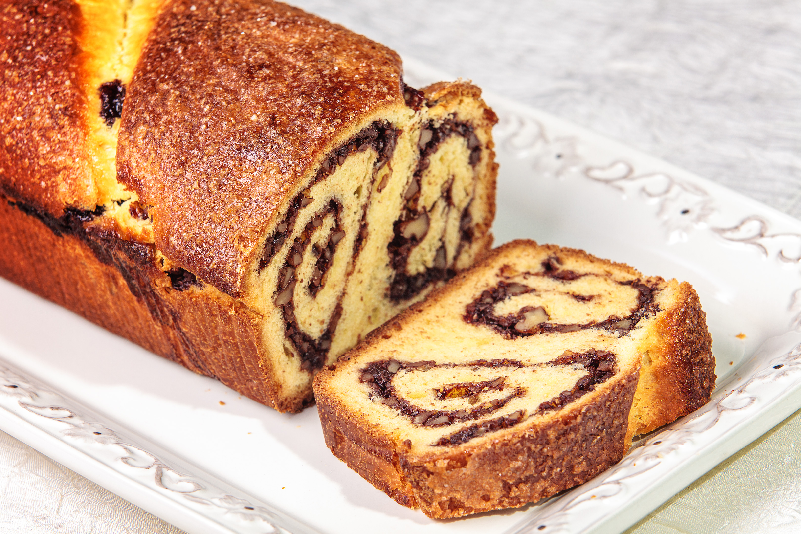

Cozonac la cuptor

Description
Această rețetă simplă de cozonac va produce
niște cozonaci pufoși și gustoși, perfecti
pentru micul dejun sau pentru a fi
savurați alături de cei dragi. Spor la gătit!
- 1 kg faină;
- 500 ml lapte;
- 4 ouă;
- 250 gr zahăr;
- 50 gr unt;
- 50 ml ulei;
- Se cerne făina într-un vas.
- Se încălzește laptele și se dizolvă
zahărul în el, adăugând coaja de lămâie.
- Se prepară maiaua din drojdie cu puțină făină și
câteva linguri din laptele
preparat deja, evitând să fie fierbinte.
- Peste maia se presară o mână de făină și se
lasă la un loc
cald timp de aproximativ 15 minute,
pentru a crește.
- Se improvizeaza